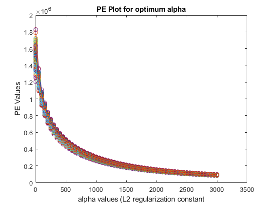

Contents
BE700 HW1 Prob 2
clear all
close all
warning('off', 'all')
loading and prep
temp = readtable('winequality_red.csv', 'HeaderLines',1);
DataTot = temp{:,:};
t = DataTot(:,3);
y = DataTot(:,1);
t = t(1:1595,:);
y = y(1:1595,:);
u = (t - mean(t))./std(t);
Part 2
i = 1;
for numPEcurves = 1:1:100
bins = randsample(1595,1595);
tot = reshape(bins,319,5);
for p = 1:50:3000+1
for mse_val = 1:1:5
tot2 = tot;
tot2(:,mse_val) = [];
rn.train{mse_val} = u(tot2);
rn.test{mse_val} = u(tot(:,mse_val));
yn.train{mse_val} = y(tot2);
yn.test{mse_val} = y(tot(:,mse_val));
x = rn.train{mse_val}(:);
ynew = yn.train{mse_val}(:);
for n2 = 1:9
X(:,n2) = x.^n2;
end
B_hat2.t = ridge(ynew, X, p);
B_hat2.i{numPEcurves}{p} = B_hat2.t;
yfit2.t = polyval(B_hat2.i{numPEcurves}{p}', rn.test{mse_val}');
yfit2.i{numPEcurves}{p} = yfit2.t;
diff12.t{mse_val} = (yfit2.t - yn.test{mse_val}');
mse(mse_val) = 1/319 * sum(diff12.t{mse_val}.^2);
end
MSE.t = 1/5 * sum(mse);
mse_tot(numPEcurves,p) = MSE.t;
end
end
mse_tot_fx = mse_tot(:,1:50:3001);
figure
for pp = 1:1:100
plot(1:50:3001, mse_tot_fx(pp,:), '-o')
hold on
end
ylabel('PE Values')
xlabel('alpha values (L2 regularization constant')
title('PE Plot for optimum alpha')
for n2 = 1:9
X_full_standardized(:,n2) = u.^n2;
end
alpha = 1251;
w_L2 = fliplr(ridge(y, X_full_standardized, alpha, 0));

Part 3
for P=9
A= ones(length(u),P+1);
for n1 = 1:P
A(:,n1+1) = u.^n1;
end
B_hat.temp = (A' * A) \ (A' * y);
B_hat.i{P} = fliplr(B_hat.temp');
end
w_ordinary = fliplr(B_hat.temp);
part 4
figure
scatter(u,y, 'o','filled')
hold on
r_dense = -2:0.003:4;
OLSfit = polyval(flipud(w_ordinary), r_dense);
plot( r_dense, OLSfit);
hold on
L2fit = polyval(flipud(w_L2), r_dense);
plot(r_dense,L2fit)
legend('raw data', 'OLS fit', 'L2-Regularized LS fit')
ylabel('y (fixed acidity)')
xlabel('u (standardized t)')
title('Raw Data and Fits')
Echoing Results
diary vjprob2.txt
echo on
disp('Part 2')
fprintf('Alpha optimum is %d\n', alpha)
w_L2
disp('Part 3')
w_ordinary
echo off
disp('Part 2')
Part 2
fprintf('Alpha optimum is %d\n', alpha)
Alpha optimum is 1251
w_L2
w_L2 =
8.1915
0.5291
0.1076
0.0933
0.0024
0.0012
-0.0005
-0.0002
-0.0001
-0.0000
disp('Part 3')
Part 3
w_ordinary
w_ordinary =
7.9364
0.4596
0.9538
1.9247
-0.8556
-1.3396
0.6032
0.2417
-0.1618
0.0217
echo off